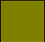

Colores
Para especificar el color que aplicaremos en el estilo de los elementos de un documento HTML existen diferentes formas de indicarlo:
Nombre (palabra clave)
Se puede poner directamento como valor el nombre del color utilizando su palabra clase (en inglés).
Ej: black, silver, grey, white, maroon, green, lime, olive, yellow, navy, red, purple, fuchsia, blue, teal, aqua, etc.
Modelo RGB
Hexadecimal
- #RGB (0-F)
- #RRGGBB (00-FF)
rgb/rgba
En el caso de rgba, 'a' hace referencia al canal alfa, que indica la transparencia del objeto (0 = transparente, 1 = opaco).
- Octetos: rgb(rojo, verde, azul) → 0-255 cada uno de los tres colores.
- Porcentajes: rgb(r%, v%, a%) → 0-100 cada color.
Colores seguros
Se utilizan para que personas con algún problema visual (ej. daltonismo) puedan ver correctamente el documento.
Hay 256 colores seguros: 00, 33, 66, 99, CC, FF
Tabla de colores básicos
| Color | Nombre | RGB Hex | Color | Nombre | RGB Hex |
|---|---|---|---|---|---|
| black | #000000 | green | #008000 | ||
| silver | #C0C0C0 | lime | #00FF00 | ||
| gray | #808080 |  | olive | #808000 | |
| white | #FFFFFF | yellow | #FFFF00 | ||
| maroon | #800000 | navy | #000080 | ||
| red | #FF0000 | blue | #0000FF | ||
| purple | #800080 | teal | #008080 | ||
| fuchsia | #FF00FF | aqua | #00FFFF |